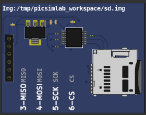

10.3.10 SD Card
This part is a SD Card shield. It’s necessary set one sd card file image before use it. (Click on SD card connector to open file dialog)
On Linux one empty image can be created with this command:
dd if=/dev/zero of=sd.img bs=1M count=32
This empty image can be used with raw sd card access, to work with FAT file system the image need to be formatted before the use. (using SdFormatter.ino for example)
